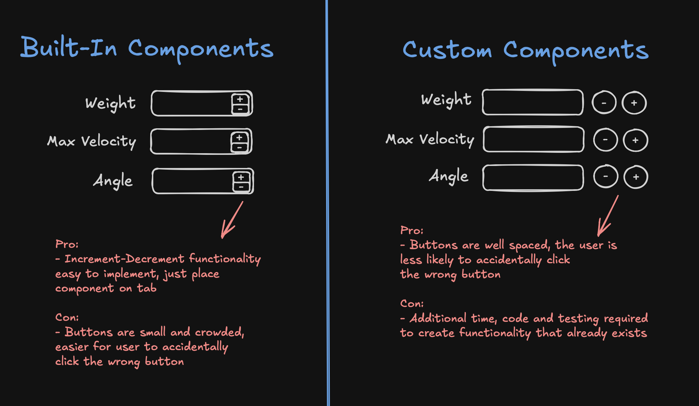

Shield Master UI Redesign
Rebuilt the UI for four workflows in Shield Master's Missile Designer Module (MDM) during an 8-week software development internship.
- Company
- GMSpazio - Rome, Italy
- Role
- Software Development Intern
- Duration
- 8 weeks, 20 hours per week
- When
- Summer 2024
Context
GMSpazio is an aerospace and defence software company based in Rome, Italy. As an intern, I worked on Shield Master, a toolkit for analyzing missile defense scenarios and evaluating defense system performance.
I worked on its first module, the Missile Designer Module (MDM), where users define and manage threat and interceptor databases. Its UI update had been outsourced, but the team was unhappy with it: spacing, sizing, and button placement were inconsistent from tab to tab, the colour scheme was unappealing, and the workflows weren't smooth.
My job was to rebuild the UI from scratch.

My Role
I owned the redesign and implementation of four MDM workflows: scenario, threat, defence network, and interceptor definition.
- Redesign: colour scheme, components, layouts, workflows, and navigation.
- Implementation: coding, testing, and assembling the components, layouts, and workflows.
Interns at GMSpazio usually work on research, but the team urgently needed this UI finished, and my C# and game development experience fit the task.
The Process
Team
- Day to day: A junior systems engineer answered my questions and gave feedback.
- Supervision: The Head of Engineering set my tasks and timelines and judged the final result.
Timeline
- Week 1: Study the original and outsourced UIs, understand functionality, identify issues.
- Weeks 2 to 5: Sketch, wireframe, and prototype new layouts, workflows, and components.
- Weeks 6 to 7: Finalise design and implementation.
- Week 8: Assemble the UI across all four MDM workflows.
Technical Decisions
- Familiar layout over complete redesign. A redesign would have looked more striking, but users already knew the tool, and the module needed clean, intuitive workflows, not a flashy interface. It also suited my skill level: I was new to UI design, and having studied the original UI and its code, and reviewed the outsourced version with the junior engineer, I had a solid base to learn from.
- Custom components over built-in Bunifu components. Bunifu is a UI library built on WinForms. Its components need no extra code or testing, but they're limited and not meant for very dynamic interfaces. Custom components took more work and still had limits, but looked better and were easier to use. Most of the improvement came from small details.

Implementation Details
- Frameworks: WinForms and Bunifu built-in components
- Language: C#, for custom functionality and for extending built-in components
- Approach: object-oriented and event-based programming
- Focus: modular, reusable components
Iterative Development and Feedback
I met weekly with the junior engineer and the Head of Engineering to review the past week's work, choose between options, and set the next week's plan. For example, I once wireframed one tab with three button designs, and we picked one to finalise.
The Results
- The MDM UI was extended to the remaining 3 modules in Shield Master, and was shipped in late 2024.
- The UI was further used as a template for one other GMSpazio software product.
Reflection
The learning curves were steep. First, in learning how to design a UI and how to make well informed design decisions. And second, in how to use the WinForms/Bunifu framework and understanding what it could and couldn't do.
In coursework, some of this friction is mitigated by the fact that the end point of a project is usually set and the assigned tech stack can be assumed to be able to meet it. Here however, I had to set the endpoint and grapple with the stack. I was given a lot of ownership and independence, and my colleagues were often busy, so making progress required concerted and consistent research. This inevitably came with moments of slow progress and coming up against walls, but it trained my patience and sharpened my skill of learning.
Once I reached a reasonable level of proficiency it was incredibly encouraging to feel myself working faster and with more confidence.
The company's source code and internal materials are not shared here. This page is limited to publicly available information about the product and my own work.